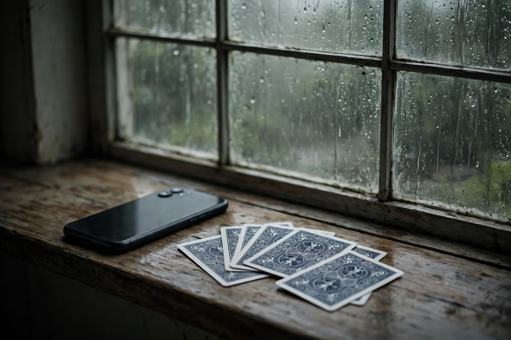

Half the phones in our family group are "budget" phones — smaller screens, modest storage, batteries that have seen better years. For a long time I assumed card games belonged to the bigger phones. Then I actually tested it, the way I test everything for these notes, and the result surprised me: a well-made rummy app does not care how expensive your phone is. It cares about three much smaller things. The offers and app details are collected on the 123 rummy promocodes page if you want to compare first.

A phone that is nearly full will refuse any install, game or not. This is where the two listings I track genuinely differ. The main app is 51 MB; the 123 rummy link page shows its full details, and its sibling comes in at 34 MB. On a phone with 800 MB free, both fit. On a phone with 60 MB free and a gallery full of forwarded videos, only one fits — and it is not the phone's fault or the game's. Clear fifty photos before you blame either.
On a 5.5-inch screen, thirteen cards sit close together. The players who struggle are not struggling with eyesight; they are struggling with an unsorted hand. Sort by suit the moment the cards land. Keep the joker apart, visibly. On a small screen, organisation is not a style choice — it is the whole interface. I would go further: small-screen players often end up tidier players, because the phone quietly forces the habit that big-screen players keep postponing.
A Points game lasts minutes and sips data; even a long Pool session is gentle compared to one page of autoplaying video. The honest battery rule from my notes: a healthy budget phone loses less charge in an hour of rummy than in twenty minutes of camera use. If your battery is old, play near a charger for Pool, and anywhere you like for Points.
Both apps run on Android 5 and above, which covers nearly every budget phone still in use. The 34 MB option — rated 4.5/5 by its players — is the kinder install; the rummy 123 game page lists it in full. The 51 MB main app, rated 4.8/5, carries the larger crowd (987K+ downloads against 678K+). On a budget phone my order is simple: install the lighter one first, learn the formats there, and let your storage — not anyone's advertising — make the decision.
A small phone is not a small experience. It is the same thirteen cards, the same three formats, and — if your hand is tidy — the same game.